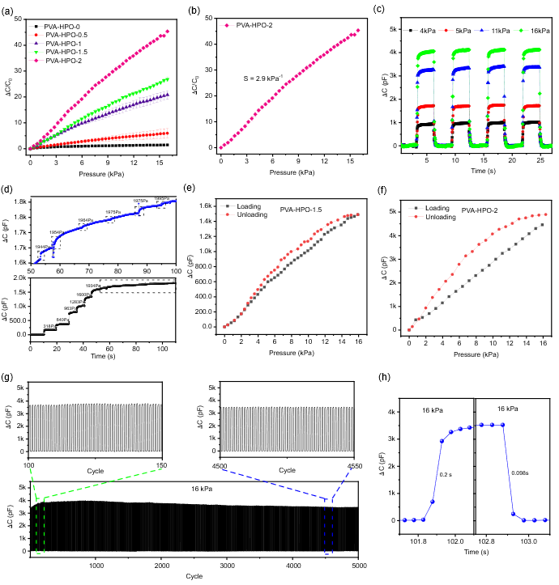
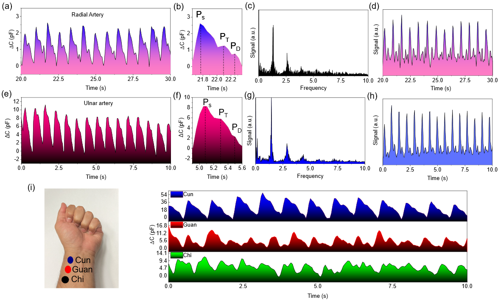
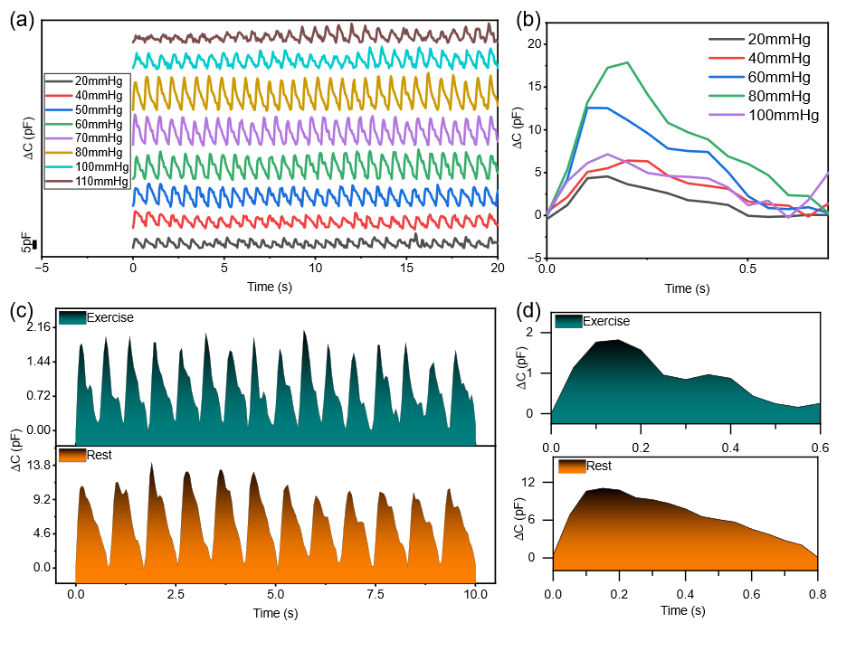

Paper-Based Supercapacitive
Pressure Sensor
Wrist Arterial Pulse Waveform Monitoring
DOI: 10.1021/acsami.3c08720
Impact Factor: 9.5 | Citations: [Add citation count if known]


Project Overview
This research presents the first-ever report of a tissue-paper-based supercapacitive pressure sensor fabricated using commercially available conductive textiles as electrode material. The sensor leverages the electric double layer (EDL) capacitance mechanism to achieve high sensitivity, fast response time, and excellent signal-to-noise ratio for wearable health monitoring applications, particularly for arterial pulse waveform detection.
Motivation
Cardiovascular diseases (CVDs) are the leading cause of death worldwide. Hypertension affects nearly half of adults in the US (47%, ~116 million). Traditional cuff-based blood pressure monitors are bulky and cannot provide continuous monitoring. Flexible pressure sensors offer a promising alternative for continuous pulse waveform monitoring, but existing high-performance sensors often require costly or time-consuming fabrication processes (photolithography on silicon wafers, electrospinning with high voltage).
Materials & Fabrication
Materials Used:
- Substrate/Dielectric: Kimtech tissue paper (commercially available)
- Ionic Solution: PVA (polyvinyl alcohol) + H₃PO₄ (phosphoric acid)
- Electrodes: Conductive textile (carbon cloth)
- Packaging: Kapton tape
Fabrication Process:
- PVA-H₃PO₄ Solution Preparation: 10 wt% PVA in DI water stirred at 90°C for 2 hours, then mixed with varying amounts of H₃PO₄ (0.5, 1, 1.5, 2 mL per 20 mL PVA)
- Electrolyte Layer Preparation: Drop coating and blade coating of PVA-H₃PO₄ solution on tissue paper, cured at 70°C for 15 min
- Sensor Assembly: Electrolyte layer sandwiched between two conductive textile electrodes
- Packaging: Sealed in Kapton tape with copper tape for electrical connections


Sensing Mechanism
The sensor operates on the supercapacitive (iontronic) sensing principle based on electric double layer (EDL) formation at the electrode-electrolyte interface.
- No Pressure: Limited contact area between electrode and electrolyte → small effective surface area → low EDL capacitance
- Under Pressure: Electrodes and electrolyte come into close contact → increased effective contact area → accumulation of positive and negative charges at interface → large change in capacitance (hundreds of pF)
The high baseline capacitance from EDL formation provides superior signal-to-noise ratio (SNR) compared to traditional parallel-plate capacitive sensors, making the sensor less susceptible to parasitic noise from body movement and electromagnetic interference.
Performance Characterization
Pressure Sensitivity
- Range 0-16 kPa: Sensitivity = 2.9 kPa⁻¹ (linear)
- Range 16-90 kPa: Sensitivity = 1.5 kPa⁻¹ (linear)
- Highest sensitivity achieved with highest electrolyte concentration (PVA-HPO-2)
Dynamic Response
- Rise Time: 0.2 seconds
- Fall Time: 0.098 seconds
- Cyclic Stability: 5000 cycles with <6% capacitance decay
Signal-to-Noise Ratio (SNR)
- At 4 kPa: 40.42 dB
- At 5 kPa: 48.61 dB
- At 11 kPa: 65.38 dB
- At 16 kPa: 61.31 dB
Pressure Resolution
- Minimum detectable pressure: 10 Pa (equivalent to a lightweight glass slide)
- Excellent resolution at both low and high pressures


Pulse Waveform Monitoring Applications
Radial Artery Pulse Waveform
The sensor successfully captured detailed pulse waveforms from the radial artery showing all characteristic features:
- Systolic Peak (Pₛ): Result of ventricular contraction
- Inflection Peak (Pₜ): Reflected wave from lower body
- Diastolic Peak (Pᴅ): Reflection from lower body
Key Cardiovascular Metrics Extracted:
- Augmentation Index (Alₜ = Pₜ/Pₛ): 0.69 (healthy range)
- Digital Volume Pulse (ΔTᴅᴠᴘ): 175 ms
- Heart Rate (via FFT): 80 BPM
- k-value: Medium-resistance type
Other Arterial Locations Tested:
- Ulnar Artery: Similar high-quality signal acquisition
- Carotid Artery: Stable pulse waveform detection
- Cun, Guan, Chi (TCM locations): Successfully detected pulse waveforms from all three positions


Real-World Performance Validation
During Hand/Finger Movements
The sensor maintained excellent pulse waveform detection despite muscular movements. Baseline capacitance shifted during movements, but the pulsatile signal quality remained unaffected due to the sensor's broad linear sensing range.
During Rest vs. Exercise
- Rest: ΔTᴅᴠᴘ = 150 ms, Alₜ = 0.79
- Exercise: ΔTᴅᴠᴘ = 100 ms, Alₜ = 0.6
Pregnancy Monitoring (Pilot Study)
- 5 months: ΔTᴅᴠᴘ = 100 ms, Alₜ = 0.815
- 7 months: ΔTᴅᴠᴘ = 75 ms, Alₜ = 0.81
External Pressure Study
Using a cuff-based sphygmomanometer system, optimal external pressure for pulse waveform acquisition was determined. Maximum signal amplitude occurred at 80 mmHg (10.67 kPa), beyond which partial arterial occlusion began.


Equipment Used
- JSM-FS100 Scanning Electron Microscope (SEM)
- JASCO FT/IR-4100 (FTIR Spectroscopy)
- MARK-10 ES-20 Test Stand
- MARK-10 MS-50 Force Gauge
- Agilent 4263B Precision LCR Meter
- Custom LabVIEW GUI for Data Visualization
- Standard Oven for Curing
Downloads
Key Innovations
- First tissue-paper-based supercapacitive pressure sensor using commercially available conductive textiles
- Ultra-low-cost fabrication compared to photolithography or electrospinning methods
- Excellent linear sensitivity over a broad pressure range (0-90 kPa)
- High SNR enabling detection of all intrinsic pulse waveform features
- Successful validation on multiple arterial locations, during movement, rest, exercise, and pregnancy
Funding & Acknowledgments
- National Science Foundation (NSF) Engineering Research Center for PATHS-UP ERC (Award #1648451)
- NSF Awards #2126190, #2301898, #2107318
- Dissertation Year Fellowship (DYF) - Florida International University
- Center for Study of Matter at Extreme Conditions (CESMEC) at FIU
Conclusion
This study successfully developed a flexible, highly sensitive supercapacitive pressure sensor through a fast, low-cost fabrication process using tissue paper. The sensor demonstrated excellent sensing capabilities with high cyclability (5000 cycles, <6% decay), high SNR (up to 65 dB), and a wide pressure sensing range (0-90 kPa). The sensor successfully detected arterial pulse waveforms from multiple locations, performed well during rest and exercise, and showed potential for pregnancy monitoring. With a resolution of 10 Pa and the ability to detect pulse waveforms during muscle movements, this sensor shows great potential for commercial wearable health monitoring applications.
Related Publications
- Chowdhury, A.H., Jafarizadeh, B., Pala, N., Wang, C. "Paper-Based Supercapacitive Pressure Sensor for Wrist Arterial Pulse Waveform Monitoring." ACS Applied Materials & Interfaces, 2023, 15, 53043-53052.
- Chowdhury, A.H., Jafarizadeh, B., Baboukani, A.R., Pala, N., Wang, C. "Monitoring and analysis of cardiovascular pulse waveforms using flexible capacitive and piezoresistive pressure sensors and machine learning perspective." Biosensors and Bioelectronics, 2023, 237, 115449.
- Chowdhury, A.H., Jafarizadeh, B., Pala, N., Wang, C. "Wearable Capacitive Pressure Sensor for Contact and Non-Contact Sensing and Pulse Waveform Monitoring." Molecules, 2022, 27, 6872.